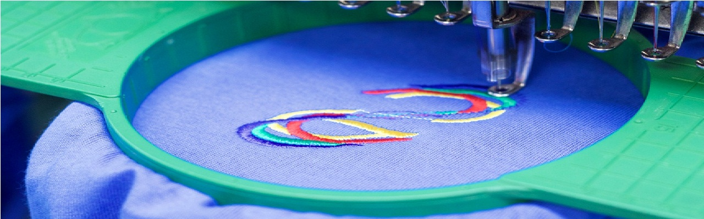
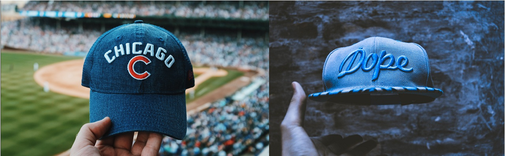
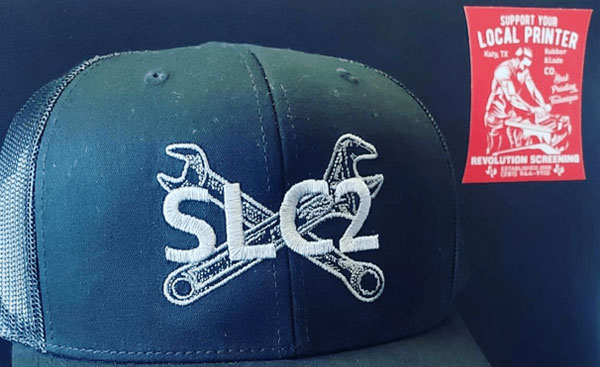
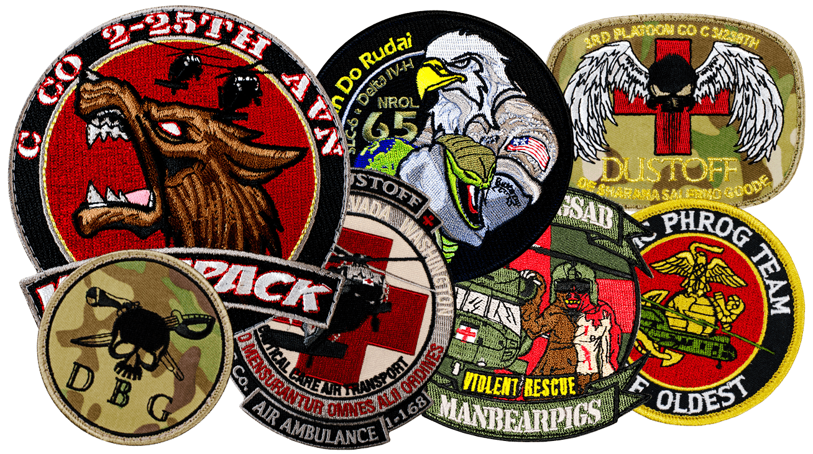

Send your artwork
Share your design, size, fabric and preferred file format.
FROM ARTWORK TO PERFECT STITCHES
Professional embroidery digitizing and vector artwork for embroidery shops, apparel decorators and promotional product companies.
Serving embroidery professionals since 2017
4–6 HoursStandard turnaround
Unlimited RevisionsMade to meet your needs
Machine-Ready FilesAll major formats
Serving Since 2017Experience in every stitch
THE TRANSFORMATION
Your artwork becomes a carefully planned stitch file, then embroidery you can see and feel.
SCROLL TO FOLLOW THE THREAD ↓
OUR SERVICES
From your first logo to your next production run, get files crafted for the way you work.

Clean detail. Consistent branding.
↗
Give your designs a new dimension.
↗
Precision for curved surfaces.
↗
Small details. Lasting impressions.
↗OUR WORK
A closer look at embroidery samples from our existing portfolio.
Explore Full Portfolio ↗HOW IT WORKS
A simple process. A production-ready result.
Start Your Free Sample ↗Share your design, size, fabric and preferred file format.
We plan the stitch paths and create your embroidery file.
Check your preview and request any revisions you need.
Download your finished file and bring your design to life.
WHY THREADS & ARTS
For the businesses behind every embroidered uniform, cap and collection. A dependable digitizing partner, from one design to the next.
Precision in the file.
Confidence on the machine.
INDUSTRIES WE SERVE
Made for the people who turn great artwork into products people wear.
A reliable partner for your next production run.
Sharp vector artwork, ready for your workflow.
Branding for caps, bags, uniforms and more.
Thoughtful digitizing for your next collection.
LET’S MAKE SOMETHING GREAT
Send one design and tell us what you’re making. Let’s start with your first qualified sample.
Request Your Free Sample ↗Opens your email app. Attach your artwork and requirements.